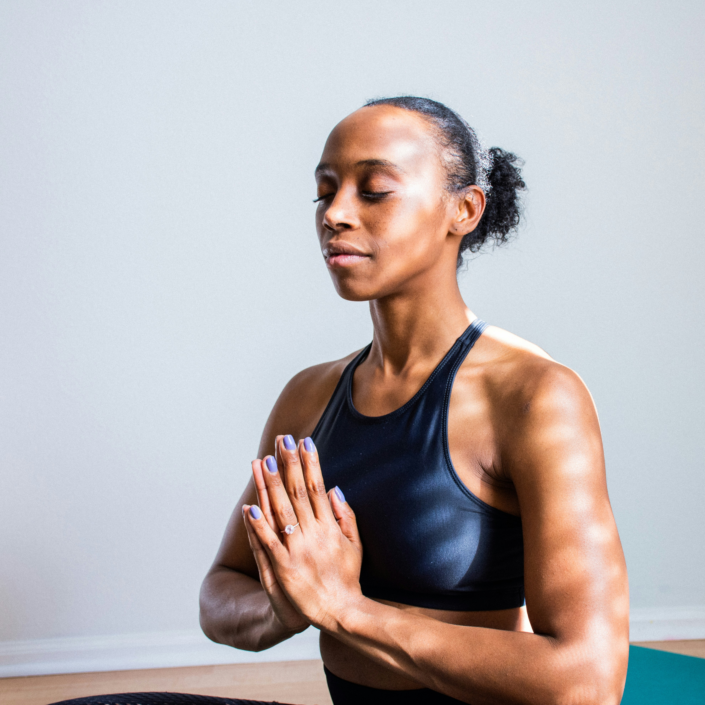
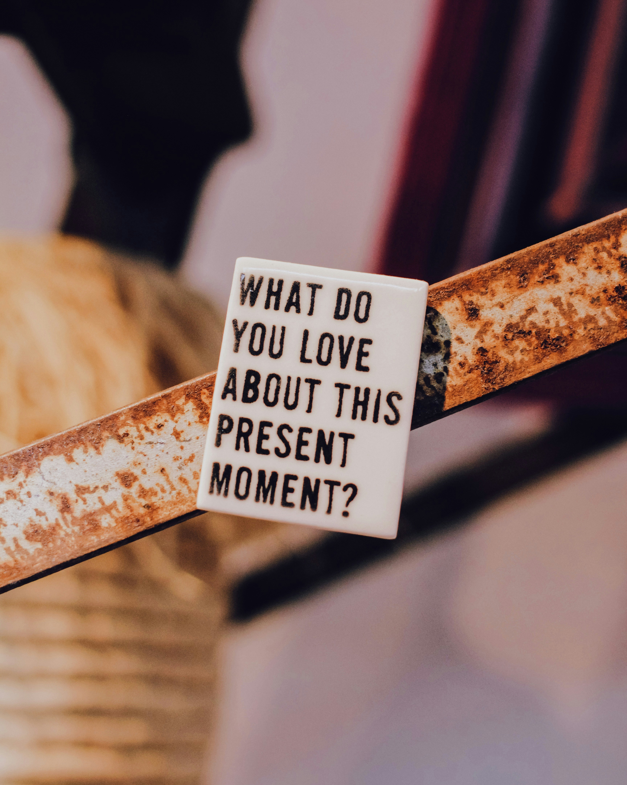

Exercises
Disclaimer: These exercises are meant to help in the meantime but are by no means a replacement for professional help. If you are struggling with mental health, please seek professional help in addition to doing these exercises.
Breathing

Diaphragmatic breathing
How to perform
- Lie on your back, legs bent and head supported with pillow
- Place one hand on the upper chest and one right below your ribcage
- Breathe in slowly through your nose, so that your stomach and the hand right below the ribcage rises. The other hand on the upper chest should remain as still as possible
- Tighten your stomach muscles and exhale through your mouth and pursed lips. Your stomach and hand should fall.
- Additionally this exercise can also be performed sitting, however it is recommended for those just starting out to do it lying down.
Benefits
- Reduces physical symptoms of anxiety and stress
- Helps you relax
- Improves muscle function and prevents strain
- Increases oxygen in blood
- Reduces blood pressure
- Reduces heart rate
- Makes it easier for gas waste to exit your lungs (CO2)
- Strengthens Diaphragm
- Decreases the work of breathing by slowing breathing rate
- Decreases oxygen demand
- Uses left effort and energy to breathe
- Helps COPD, and Asthma
Box Breathing (4-4-4-4)
How to perform
- Inhale slowly through your nose for 4 seconds
- Hold your breath for 4 seconds
- Exhale slowly through your mouth for 4 seconds
- Hold no breath for 4 seconds
- Repeat 3-5 cycles
Benefits
- Works best when anxiety or stress spikes and you need to calm down immediately
- Gives your brain something other then the stress to focus on
- Recalibrates nervous system
4-7-8 Breathing
How to perform
- Inhale through your nose for 4 seconds
- Hold your breath for 7 seconds
- Exhale through your mouth for 8 seconds
- Repeat 4 times
Benefits
- Helps make your nervous system feel safe
- Calms you down
- Relieves stress
- Best before bed or during strong emotional stress
Grounding
Stress and anxiety are things that take us out of the present moment and bring worry about things that aren't right in front of us. So here are some techniques that, when implemented, should return us to the present moment.

5-4-3-2-1 Coping technique
How to perform
- Acknowledge 5 things you can see (a chair, a tree, a car, etc)
- Acknowledge 4 things you can touch (your hair, your phone, your desk, your bed, etc)
- Acknowledge 3 things you hear, try to focus on external sounds (A fan blowing, a car passing by, a vacuum cleaner, etc)
- Acknowledge 2 things you can smell (soap in a bathroom, nature outside, etc) if you can't smell 2 things from where you currently are, take a walk.
- Acknowledge 1 thing you taste, what does the inside of your mouth currently taste like? (gum, toothpaste, lunch, etc)
Body Scanning
How to perform
- Settle down in a comfortable position, this could be sitting in a chair with your back supported or laying down in a bed
- From head to toe slowly move from one body part to the next and acknowledge any sensation felt. The goal isn't to change any of the sensations, but rather to notice their presence. Sensations include but aren't limited to, warmth coolness, tingling, tightness, lack of sensation, etc
- If your mind wanders, acknowledge that it has, and gently guide it back
- At the end of the practice, gently bring attention back to your breathing and body as a whole. To start this process, it is recommended to take a deep breath and wiggle your fingers and toes.
Cognitive games
How to perform
-There are several everyday games that one can enjoy not only for pleasure but to also ground yourself in the present moment. Some good examples include but are not limited to the Wordle, Connections, the Crossword, Codenames, Spot it and Mastermind. While you may have to pay for some of their games, the New York Times offer quite a few free games that are fun.
The Alphabet game
How to perform
- Pick a category, doesn't matter what it is, just that it is relatively broad. It could be countries, animals, fruits, etc.
- Then, starting with A, name an item that belongs to that category
- Repeat the last step for every letter of the alphabet, while keeping the same category
- Make it social: With a partner, alternate saying each letter of the alphabet (You start with saying an item starting with A, then your partner says an item starting with B, etc)
The Suitcase game
How to perform
- Get a partner and start choosing what you're going to bring with you on vacation (Ex: “I'm going to pack soap”)
- Then the other person adds an item after reciting what the other person said ( “I'm going to pack soap and shirts”)
- Continue adding items until somebody messes up.
The Counting game
How to perform
- Get a partner and take turns counting to ten (you say 1 and then they say 2, etc)
- After you finish counting to ten, choose a number to replace with a word, sound, or phrase of your choice (Ex: replace 5 with “Starbursts”)
- Then start counting again making sure to switch who starts
- When you get to the number that was replaced with something else, say the replacement instead of the number (Ex: instead of saying 5, you would say “Starbursts”)
- If you successively get to 10, replace a new number with a different word, sound or phrase (Ex: instead of saying 8, you would clap instead)
- If you mess up or forget, start the game over again
- You win when both you and your partner successfully replace all numbers and count to 10
Exercise
About
- Any type of exercise is fine, it doesn't matter if you are out of shape or unfit, even a long walk counts
- Increases endorphins (feel-good molecules)
- Lessens negative effects of stress
- Helps you forget about your days worries
- Improves your mood
- Start slow but steady
- Any exercise is better than none, if you can't exercise for 30 minutes then just do 10 minutes.
How to perform
- It is important to not only exercise once, but to make it a consistent habit. Here is a plan to help you achieve that.
- Set SMART goals, specific, measurable, attainable, realistic, and timely
- Work out with a friend
- Switch your exercise plan. If you compete at a sport competitively or already exercise consistently and are still facing stress and anxiety, switching what activity you are doing to a lower stress one could be the solution you are looking for. A lower stress physical activity should be something that isn't competitive and can include things like yoga, walking/running (for leisure), lifting weights, cycling, etc.
Falling asleep faster
There is no perfect formula to going to bed faster. However, there are certain techniques that can help you fall asleep quicker. Experiment and try to see what works for you.
Counting Sheep the "right way"
How to preform
Despite what many people think, counting sheep does not literally mean to count sheep. Instead, start by choosing a category, it can be anything from car brands to pasta shapes. Then after you have chosen a category, try to think of all the items in that category (Ex: rigatoni, bowtie, ravioli, etc). After you can no longer think of any more items in that specific category, move on to a new one and repeat until you fall asleep.
Guided Meditations
How to preform
Guided meditations gives you something relaxing to focus on, so you don't think about stressful things. Thus these meditations help you fall asleep quicker by making you relaxed.
Here are links to some free guided meditations to help you fall asleep (Disclaimer: the length has no impact on the quality of meditation. They are all equally as good):